Parametric 3D Models
A collection of parametric 3D models I've made with Replicad for personal projects. All created in JavaScript (with one SCAD exception). Feel free to use and edit them in any way you like.
Around the house
Drawing holder

Simple holder I designed to put and photograph my pen plotted drawings.
Fun
Plotter
Isograph ink reservoir
When pen-plotting, the default isograph ink reservoir feels small and for larger plots it needs to be refilled.
Spring loaded pen holder

Spring loaded pen holder for an old plotter in a local hacker space.
Axidraw Pen Holder (SCAD)

Pigma Micron holder for the Axidraw plotter. The only SCAD model and therefore not editable in the browser.